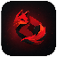

ZeFoX
Better Roblox Experience
Starting
Discord desktop must be open before Rich Presence can connect.
ZeFoX Presence Bridge
Turn the local Discord bridge off or on at once
Bridge
Starting...
Discord
Connecting...
Port
127.0.0.1:3030
Discord Rich Presence
Show ZeFoX activity on your Discord profile
Account on Rich Presence
Show your Roblox headshot and profile link
Status
Starting bridge...